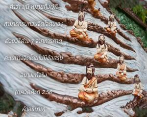
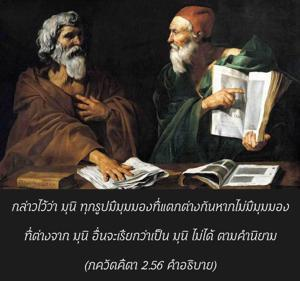
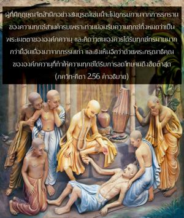

ผู้ที่จิตใจไม่ถูกรบกวนแม้ท่ามกลางความทุกข์สามคำรบ หรือไม่มีความปิติเมื่อได้รับความสุข และเป็นอิสระจากความยึดติด ความกลัว และความโกรธ ได้ชื่อว่าเป็นนักปราชญ์ผู้มีจิตใจมั่นคง



คำว่า มุนิ หมายถึง ผู้ที่สามารถรบกวนจิตใจตนเองด้วยวิธีต่างๆ จากการคาดคะเนทางจิตโดยไม่มีข้อสรุปอย่างแท้จริง กล่าวไว้ว่า มุนิ ทุกรูปมีมุมมองที่แตกต่างกันหากไม่มีมุมมองที่ต่างจาก มุนิ อื่นจะเรียกว่าเป็น มุนิ ไม่ได้ ตามคำนิยาม นาสาวฺ ฤษิรฺ ยสฺย มตํ น ภินฺนมฺ (มหาภารต, วน-ปรฺว 313.117) แต่ สฺถิต-ธีรฺ มุนิ ที่องค์ภควานฺตรัส ณ ที่นี้แตกต่างจาก มุนิ ทั่วไป สฺถิต-ธีรฺ มุนิ อยู่ในกฺฤษฺณจิตสำนึกเสมอเพราะได้เสร็จสิ้นจากภารกิจการคาดคะเนสร้างสรรค์ทั้งปวง ท่านได้ชื่อว่า ปฺรศานฺต-นิห์เศษ-มโน-รถานฺตร (โสฺตตฺร-รตฺน 43) หรือผู้ที่ข้ามพ้นระดับแห่งการคาดคะเนทางจิตใจ และได้ผลสรุปว่าองค์ศฺรีกฺฤษฺณ หรือ วาสุเทว คือทุกสิ่งทุกอย่าง (วาสุเทวห์ สรฺวมฺ อิติ ส มหาตฺมา สุ-ทุรฺลภห์) ท่านได้ชื่อว่า มุนิ ผู้มีจิตใจมั่นคง ผู้ที่มีกฺฤษฺณจิตสำนึกอย่างสมบูรณ์เช่นนี้จะไม่ถูกรบกวนจากการรุกรานของความทุกข์สามคำรบ เพราะท่านน้อมรับความทุกข์ทั้งหมดว่าเป็นพระเมตตาขององค์ภควานฺ และคิดว่าตนเองควรได้รับทุกข์ทรมานมากกว่านี้จากกรรมเก่าของตน และยังเห็นอีกว่าด้วยพระกรุณาธิคุณขององค์ภควานฺที่ทำให้ความทุกข์ได้รับการลดโทษจนถึงขีดต่ำสุด ในลักษณะเดียวกัน เมื่อได้รับความสุขท่านจะมอบให้แด่องค์ภควานฺ และคิดว่าตนเองไม่ควรค่ากับความสุขนี้ สำนึกว่าด้วยพระกรุณาธิคุณขององค์ภควานฺเท่านั้นที่ทำให้ท่านได้มาอยู่ในสภาวะที่สะดวกสบายเช่นนี้ และทำให้สามารถปฏิบัติรับใช้พระองค์ได้ดียิ่งขึ้น สำหรับการรับใช้องค์ภควานฺท่านจะมีความกล้าหาญและตื่นตัวเสมอ โดยไม่มีอิทธิพลของการยึดติดหรือการไม่ยึดติดใดๆ มาครอบงำ การยึดติด หมายถึง ยอมรับเอาบางสิ่งเพื่อสนองประสาทสัมผัส และการไม่ยึดติด คือ ปราศจากการยึดติดกับการสนองประสาทสัมผัสเช่นนี้ แต่ผู้ที่ตั้งมั่นในกฺฤษฺณจิตสำนึกจะไม่มีทั้งการยึดติดและการไม่ยึดติด เพราะท่านได้อุทิศชีวิตเพื่อการรับใช้องค์ภควานฺเท่านั้น ดังนั้น จึงไม่มีความโกรธเลยแม้ว่าความพยายามจะไม่ประสบผลสำเร็จ บุคคลในกฺฤษฺณจิตสำนึกจะมีความมั่นใจอยู่เสมอไม่ว่าจะได้รับความสำเร็จหรือความล้มเหลว